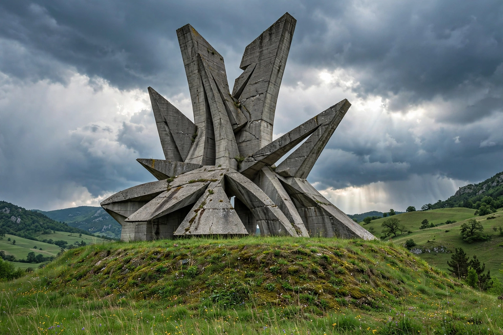

[Image placeholder: A Yugoslav-era Partisan memorial (spomenik)]**Yugoslavia** ('land of the South Slavs') was a country in Southeast and Central Europe that existed, in several forms, from 1918 to the early 2000s. The Kingdom of Yugoslavia (1918–41, first called the Kingdom of Serbs, Croats and Slovenes) united Serbia and Montenegro with former Austro-Hungarian South Slav lands. After the Second World War it was refounded as the Socialist Federal Republic of Yugoslavia (SFRY) — six republics (Serbia, Croatia, Bosnia and Herzegovina, Slovenia, Macedonia, Montenegro) and two autonomous provinces — under Josip Broz Tito.
Tito's Yugoslavia broke with Stalin in 1948, co-founded the Non-Aligned Movement, and experimented with market-socialist 'self-management', becoming the most open communist state. After Tito's death (1980), debt, inflation and rising nationalism strained the federation; in 1991–92 Slovenia, Croatia, Bosnia and Herzegovina and Macedonia seceded, and Bosnia's declaration triggered Europe's worst war since 1945 (1992–95, ending at Dayton), followed by the Kosovo War (1998–99) and NATO's bombing of the rump Federal Republic of Yugoslavia (Serbia and Montenegro), which itself dissolved peacefully in 2006. 'Yugonostalgia' persists across the successor states, which share languages, music and memory while disputing the wars' legacies.
The Ten-Day War in Slovenia (1991), the Croatian War of Independence (1991–95), the Bosnian War (1992–95; including the Srebrenica genocide of 1995), and Kosovo's path to its contested 2008 independence declaration complete the sequence; North Macedonia alone seceded without war.